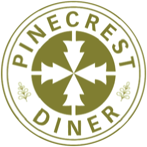

☓
Home
Menu
Contact

Established in 1969, the Pinecrest Diner is often referred to as a San Francisco institution, as it is the oldest standing, 24-hour diner in Union Square.
The Pinecrest Diner was founded in 1969 by Vasilios (Bill) & Nikoletta Foundas, both immigrants of Greece. Having been left orphaned after WWII, Bill and his siblings dreamed of moving to America and leaving their bad memories behind. On their long and difficult journey, they worked in restaurants in Montreal and eventually escaped the cold to Vancouver, where Bill worked his way to the ownership of Gus' Coffee Shop, in the Gastown district. After learning that his father once lived in San Francisco in the late 1800's (while owning, "The Bucket of Blood", a bar in Jack London Square named after a famous fight involving Jack London) the siblings discovered that they were eligible for American citizenship. Once established, they brought their spouses and children to America.
After living through a winter in New York and obsessed with the notion of living where his father once lived, Bill moved his family to San Francisco where he worked in multiple restaurants until landing at the corner of Geary and Mason. The original Pinecrest (named after a busy diner in Bayshore, Long Isl, NY, where Bill once worked) was located on Powell & Sutter. Prior to that, Bill & Nikoletta owned Skip's on sixth and market and ran the banquet facility at the Canterbury Hotel.
Bill & Nikoletta fed and employed many Greek immigrants who came to San Francisco seeking job opportunities- many of which moved on to successes of their own. They also supported many Greek politicians who's gathering spot was the Pinecrest. Today, the Pinecrest is frequented by tourists, conventioneers and locals by day and the Bay Area party seen by night, as it is located in the heart of San Francisco's nightlife.
Since 2008, the Pinecrest has been owned and operated by Bill & Nikoletta's son, Pete and daughter in law, Sylvia. At the age of 2, the Pinecrest was Pete's playground as his parents spent their waking hours there. As the years progressed, Pete worked as a bus boy & dishwasher being fired multiple times by his father. Sylvia began working at the Pinecrest as a teenager. Prior to 2008, the couple had been back and forth through the years starting other businesses of their own- both in and out of the restaurant industry. In 2005, partnered with other family members, Pete and Sylvia opened the Boulevard Cafe in Daly City. In 2007, the couple opened Walnut Park Grill in Petaluma and in 2016, the couple opened The Blue Door Restaurant and Bar in San Jose.
Pete & Sylvia have modified the Pinecrest menu through the years by continuously increasing food quality to compete with the newest trends, while still maintaining a well-oiled machine. If you haven't done so yet, you should take a seat at the counter and watch the show.
The Pinecrest is often referred to as a San Francisco institution, as it is the oldest standing, 24-hour diner in Union Square. Although completely gutted in 2010, the diner maintains its same nostalgic feel. Most importantly, Bill can still be found sitting at the counter (as an iconic figure) greeting guests from all around the world who return again & again to reminisce a moment in time. Everyone has walked through the doors- young & old, rich & poor, famous & crazy...the Pinecrest has seen it all! The best stories are those meetings of love and marriage.
The family is not the only familiar face you will find at the Pinecrest, as most of the staff has been working for the family for years- a fact that speaks volumes about the establishment. Please come visit us for a taste of San Francisco's history.
☓
Order To-Go
Contact Us
General
Large Party
Catering
Newsletter
Billing
Other